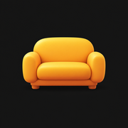

Couchside
Icon studies · Four directions
Round 2: more depth, warmer colorNew refinements of Soft Seat, Afterglow and Couchside C.
Four ways to
feel at home.
A new set of app icon concepts, from a soft seat to a simple signature. Select a direction to preview its Home Screen and circular crops. These are comparison concepts; selecting one only changes this preview.





Selected crop preview
Soft Seat
A warm, welcoming sofa silhouette. Broad curves and generous cushions make the simplest expression of Couchside.
Rounded square · 60 px
Circular mask · 60 px